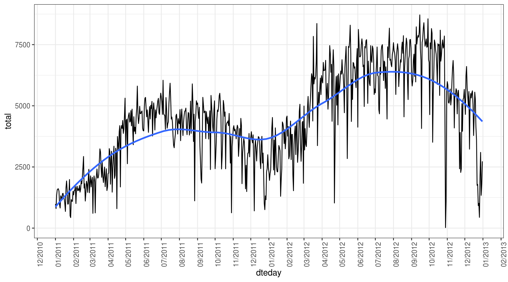
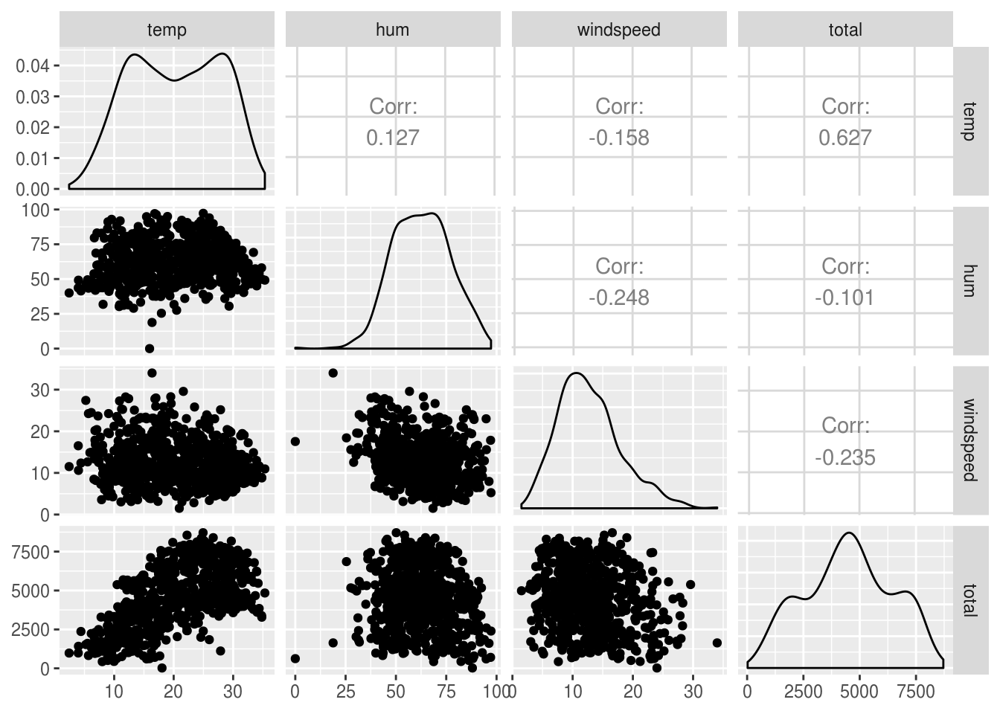
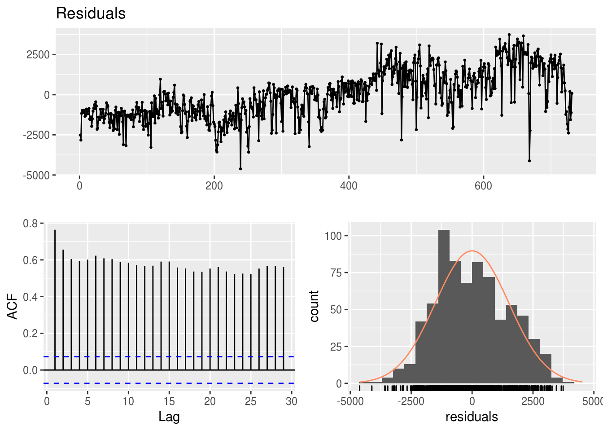

Capítulo 2 Regressão
library(tidyverse)
library(GGally)
library(broom)A técnica chamada de regressão é usada para predizer o valor de uma variável Y (chamada de variável resposta ou dependente) baseado em uma ou mais variáveis X (variável explanatória ou independente). Se a regressão utiliza apenas uma variável explanatória, é chamada de regressão simples. O objetivo da regressão é representar a relação entre as variáveis resposta e explanatória por meio de uma equação matemática linear do tipo:
\(Y = \beta_1 + \beta_2X + \epsilon\)
onde \(\beta_1\) é a interceptação da reta com o eixo vertical e \(\beta2\) o coeficiente de inclinação associado à variável explanatória. Tais elementos são chamados coeficientes da regressão. O termo \(\epsilon\) representa o termo do erro, que é a parte de Y que a regressão é incapaz de explicar (por existir outras variáveis que explicariam Y mas que não foram incorporadas ao modelo).
Neste módulo, usaremos como exemplo o dataset do Kaggle de Bicicletas compartilhadas em Washington D.C., nos Estados Unidos. Baixe o arquivo zip do Kaggle e leia o README para entender o que o dataset representa e suas variáveis significam. Vamos importar apenas
df <- readr::read_csv("https://raw.githubusercontent.com/sillasgonzaga/curso_series_temporais/master/data/Bike-Sharing-Dataset/day.csv")
# dando olhada nos dados
# glimpse(df)Seguindo o que aprendemos a partir da leitura do README, vamos fazer algumas transformações de colunas antes de proceder com a modelagem:
df_transf <- df %>%
# remover colunas irrelevantes
select(-c(instant, workingday)) %>%
# renomear algumas colunas
rename(
estacao = season,
total = cnt,
year = yr,
month = mnth
) %>%
# mudar weekday, que começa a contar do zero
mutate(weekday = weekday + 1) %>%
# transformar a variavel de feriado para texto
mutate(holiday = as.character(holiday)) %>%
# mudar os valores de algumas variaveis
mutate(
# substituir o codigo do ano pelo ano real
year = lubridate::year(dteday),
# adicionar um leading zero no mês
month = str_pad(month, width = 2, side = "left", pad = "0"),
# converter weathersit para variavel do tipo factor
weathersit = factor(weathersit,
levels = 1:4,
labels = c("muito bom", "bom", "ruim", "muito ruim")),
# converter dia da semana para variavel do tipo factor
weekday = factor(weekday,
levels = 1:7,
labels = c("Dom", "Seg", "Ter", "Qua", "Qui", "Sex", "Sab")),
# fazer o mesmo para estacao
estacao = factor(estacao,
levels = 1:4,
labels = c("Primavera", "Verao", "Outono", "Inverno")),
# converter colunas numericas para escala normal (não-normalizada)
temp = temp * 41,
atemp = atemp * 50,
hum = hum * 100,
windspeed = windspeed * 67
)Estamos interessados em entender o que influencia a demanda de bicicletas alugadas por dia.
2.1 Análise exploratória
O primeiro passo para entendermos nossa variável de estudo é criar um gráfico da série:
df_transf %>%
ggplot(aes(x = dteday, y = total)) +
geom_line() +
# adicionar curva de tendencia
geom_smooth(se = FALSE) +
theme_bw() +
# quebrar eixo x em 1 mes
scale_x_date(date_breaks = "1 month",
date_labels = "%m/%Y",
minor_breaks = NULL) +
# inverter eixos
theme(axis.text.x = element_text(angle = 90))## `geom_smooth()` using method = 'loess' and formula 'y ~ x'
Apenas com o gráfico acima, podemos aprender uma série de insights interessantes:
- Parece haver múltiplas sazonalidades que afetam a demanda por bicicletas alugadas: dia da semana, mês, ano e estação do ano.
- Não existe um componente de tendência linear, pois as altas e quedas são mais em função das sazonalidades descritas acima.
Exercícios:
- Como você faria para representar a estação do ano no gráfico acima? Teste duas abordagens: acrescente linhas verticas tracejadas marcando a transição das estações ou pinte a linha (usando aes) de acordo com a estação.
- Explore com mais detalhes a distribuição da variável total em função de:
- Dia da semana & Feriado
- Dia da semana & Condição do tempo
- Mês & Estação do ano
- Mês & Ano
2.2 Correlação
Correlação é um indicador estatístico que mede o nível de dependência linear entre duas variáveis. Está definida no intervalo \([-1, +1]\). Se a correlação é negativa, indica que as variáveis são inversamente proporcinais: quando uma aumenta, a outra diminui. Se é positiva, indica que as variáveis são diretamente proporcionais.
Medir a correlação no R é muito simples:
# Usando a função cor
cor(df_transf$total, df_transf$temp)## [1] 0.627494cor(df_transf$temp, df_transf$atemp)## [1] 0.9917016Como poderia se esperar, as variáveis temp e atemp são praticamente a mesma, apresentando uma correlação quase igual a 1. Isso, em regressão, é um problema chamado multicolinearidade. Por isso, é necessário remover uma delas:
df_transf <- df_transf %>%
select(-atemp)No entanto, é possível analisar todos os pares possíveis entre as variáveis de uma matriz numérica:
df_transf %>%
select_if(is.numeric) %>%
select(-year) %>%
cor()## temp hum windspeed casual registered
## temp 1.0000000 0.12696294 -0.1579441 0.54328466 0.5400120
## hum 0.1269629 1.00000000 -0.2484891 -0.07700788 -0.0910886
## windspeed -0.1579441 -0.24848910 1.0000000 -0.16761335 -0.2174490
## casual 0.5432847 -0.07700788 -0.1676133 1.00000000 0.3952825
## registered 0.5400120 -0.09108860 -0.2174490 0.39528245 1.0000000
## total 0.6274940 -0.10065856 -0.2345450 0.67280443 0.9455169
## total
## temp 0.6274940
## hum -0.1006586
## windspeed -0.2345450
## casual 0.6728044
## registered 0.9455169
## total 1.0000000Um incremento ainda melhor é usar o pacote GGally para plotar uma matriz de correlação:
df_transf %>%
select_if(is.numeric) %>%
select(-c(year, casual, registered)) %>%
GGally::ggpairs(progress = FALSE)
Percebe-se pela matriz de correlação (e principalmente pelo gráfico) que talvez só valeria a pena usar como variáveis explanatórias do nosso objeto de estudo a temperatura do dia.
2.3 Modelagem por regressão simples
No R, é bem simples ajustar um modelo de regressão. Usando a variável temp como explanatória e total como resposta, um modelo é construído da seguinte maneira:
modelo.simples <- lm(total ~ temp, data = df_transf)
summary(modelo.simples)##
## Call:
## lm(formula = total ~ temp, data = df_transf)
##
## Residuals:
## Min 1Q Median 3Q Max
## -4615.3 -1134.9 -104.4 1044.3 3737.8
##
## Coefficients:
## Estimate Std. Error t value Pr(>|t|)
## (Intercept) 1214.642 161.164 7.537 1.43e-13 ***
## temp 161.969 7.444 21.759 < 2e-16 ***
## ---
## Signif. codes: 0 '***' 0.001 '**' 0.01 '*' 0.05 '.' 0.1 ' ' 1
##
## Residual standard error: 1509 on 729 degrees of freedom
## Multiple R-squared: 0.3937, Adjusted R-squared: 0.3929
## F-statistic: 473.5 on 1 and 729 DF, p-value: < 2.2e-16Com o modelo criado, é possível descrever a relação entre consumo e n_carteiras matematicamente por meio da seguinte equação:
\(total = 1214.642 + 161.969 \times temperatura\)
Vamos deixar para analisar os diagnósticos da regressão no próximo item:
2.4 Regressão multivariada
Suponha também que você deseja incorporar as outras variáveis que detectamos que são importantes para modelar a variável da quantidade de bikes alugadas:
# sintaxe para incluir todas as variaveis como regressoras menos uma (dteday)
modelo.multiplo <- lm(total ~ . - dteday - casual - registered, data = df_transf)
summary(modelo.multiplo)##
## Call:
## lm(formula = total ~ . - dteday - casual - registered, data = df_transf)
##
## Residuals:
## Min 1Q Median 3Q Max
## -3960.9 -350.9 74.1 456.0 2919.9
##
## Coefficients:
## Estimate Std. Error t value Pr(>|t|)
## (Intercept) -4.057e+06 1.171e+05 -34.634 < 2e-16 ***
## estacaoVerao 8.893e+02 1.795e+02 4.954 9.12e-07 ***
## estacaoOutono 8.322e+02 2.132e+02 3.903 0.000104 ***
## estacaoInverno 1.579e+03 1.810e+02 8.722 < 2e-16 ***
## year 2.018e+03 5.823e+01 34.660 < 2e-16 ***
## month02 1.369e+02 1.437e+02 0.952 0.341396
## month03 5.451e+02 1.655e+02 3.294 0.001036 **
## month04 4.565e+02 2.476e+02 1.844 0.065667 .
## month05 7.235e+02 2.675e+02 2.704 0.007010 **
## month06 4.906e+02 2.818e+02 1.741 0.082133 .
## month07 8.404e+00 3.134e+02 0.027 0.978613
## month08 4.049e+02 3.015e+02 1.343 0.179700
## month09 9.839e+02 2.647e+02 3.717 0.000217 ***
## month10 5.209e+02 2.416e+02 2.156 0.031432 *
## month11 -1.114e+02 2.308e+02 -0.482 0.629621
## month12 -8.439e+01 1.822e+02 -0.463 0.643439
## holiday1 -6.036e+02 1.801e+02 -3.352 0.000845 ***
## weekdaySeg 2.149e+02 1.095e+02 1.962 0.050133 .
## weekdayTer 3.091e+02 1.072e+02 2.884 0.004041 **
## weekdayQua 3.774e+02 1.075e+02 3.512 0.000473 ***
## weekdayQui 3.852e+02 1.076e+02 3.581 0.000366 ***
## weekdaySex 4.286e+02 1.073e+02 3.996 7.12e-05 ***
## weekdaySab 4.387e+02 1.066e+02 4.116 4.32e-05 ***
## weathersitbom -4.652e+02 7.708e+01 -6.035 2.57e-09 ***
## weathersitruim -1.981e+03 1.967e+02 -10.075 < 2e-16 ***
## temp 1.094e+02 1.004e+01 10.896 < 2e-16 ***
## hum -1.518e+01 2.922e+00 -5.196 2.68e-07 ***
## windspeed -4.366e+01 6.062e+00 -7.202 1.53e-12 ***
## ---
## Signif. codes: 0 '***' 0.001 '**' 0.01 '*' 0.05 '.' 0.1 ' ' 1
##
## Residual standard error: 769.5 on 703 degrees of freedom
## Multiple R-squared: 0.848, Adjusted R-squared: 0.8422
## F-statistic: 145.3 on 27 and 703 DF, p-value: < 2.2e-16Valores altos de impostos aparentam estar associados com valores baixos de consumo.
Para adicionar uma nova variável ao modelo, fazemos:
# Usando o pacote broom para formatar o output dos modelos de regressao
# concatenando os dois modelos em um dataframe so
# metricas dos regressores
modelo.simples %>% tidy()## # A tibble: 2 x 5
## term estimate std.error statistic p.value
## <chr> <dbl> <dbl> <dbl> <dbl>
## 1 (Intercept) 1215. 161. 7.54 1.43e-13
## 2 temp 162. 7.44 21.8 2.81e-81modelo.multiplo %>% tidy()## # A tibble: 28 x 5
## term estimate std.error statistic p.value
## <chr> <dbl> <dbl> <dbl> <dbl>
## 1 (Intercept) -4056781. 117133. -34.6 3.97e-154
## 2 estacaoVerao 889. 180. 4.95 9.12e- 7
## 3 estacaoOutono 832. 213. 3.90 1.04e- 4
## 4 estacaoInverno 1579. 181. 8.72 1.97e- 17
## 5 year 2018. 58.2 34.7 2.85e-154
## 6 month02 137. 144. 0.952 3.41e- 1
## 7 month03 545. 165. 3.29 1.04e- 3
## 8 month04 456. 248. 1.84 6.57e- 2
## 9 month05 724. 268. 2.70 7.01e- 3
## 10 month06 491. 282. 1.74 8.21e- 2
## # … with 18 more rows# metricas do modelo
modelo.simples %>% glance()## # A tibble: 1 x 11
## r.squared adj.r.squared sigma statistic p.value df logLik AIC
## <dbl> <dbl> <dbl> <dbl> <dbl> <int> <dbl> <dbl>
## 1 0.394 0.393 1509. 473. 2.81e-81 2 -6387. 12780.
## # … with 3 more variables: BIC <dbl>, deviance <dbl>, df.residual <int>modelo.multiplo %>% glance()## # A tibble: 1 x 11
## r.squared adj.r.squared sigma statistic p.value df logLik AIC
## <dbl> <dbl> <dbl> <dbl> <dbl> <int> <dbl> <dbl>
## 1 0.848 0.842 770. 145. 1.49e-266 28 -5881. 11820.
## # … with 3 more variables: BIC <dbl>, deviance <dbl>, df.residual <int>Agora vamos à análise dos indicadores da regressão:
2.4.1 Hipótese nula da regressão
A presença de um valor-p indica que existe uma hipótese nula sendo testada. Na regressão linear, a hipótese nula é a de que os coeficientes das variáveis explanatórias são iguais a zero. A hipótese alternativa é a de que os coeficientes não são iguais a zero, ou seja, existe uma relação matemático entre as variáveis do modelo.
2.4.2 valor-p
Nós podemos considerar um modelo linear estatisticamente significante apenas se os valores-p, tanto dos coeficientes como do modelo, são menores que um nível de significância pré-determinado, que idealmente é 0,05.
2.4.3 R-quadrado e R-quadrado ajustado
R-quadrado é a proporção da variação da variável resposta que é explicada pelo modelo. Quanto maior, melhor o modelo, supostamente.
Se continuarmos adicionando variáveis ao modelo de regressão, o R-quadrado apenas tende a crescer, intuitivamente. Isso acontecerá mesmo que a variável explanatória adicionada não seja significante. Para evitar esse problema que tornaria a comparação entre modelos praticamente inviável, o R-quadrado ajustado “penaliza” o valor do R-quadrado pelo número de variáveis adicionadas. Semelhantemente ao R-quadrado, quanto maior, melhor.
2.4.4 Análise dos resíduos
Um indicador visual da qualidade de um modelo é a distribuição dos modelos: um bom modelo apresentará resídos que seguem uma distribuição normal com média 0.
Um modelo de regressão pressupõe que seus resíduos (subtração entre o valor real e o ajustado) seguem uma distribuição normal e não possuem nenhum tipo de relação matemática com os regressores do modelo (ou mesmo com variáveis independentes não usadas no modelo).
forecast::checkresiduals(modelo.multiplo)
##
## Breusch-Godfrey test for serial correlation of order up to 31
##
## data: Residuals
## LM test = 148.71, df = 31, p-value < 2.2e-162.5 Regressão como modelo preditivo
Um dos objetivos da regressão, além de descrever matematicamente a relação entre duas ou mais variáveis, é prever o valor da variável dependente baseado em novos valores da variável independente. Não é possível afirmar que um modelo apresentará um bom desempenho preditivo analisando apenas as métricas da regressão do tópico anterior. É necessário testar o modelo em dados que ele nunca viu.
A prática comum em Data Science é de separar o conjunto de dados que se tem em mãos em dois conjuntos: o de treino, que será usado para construir o modelo, e o de teste, que será usado como input do modelo para avaliar sua acurácia.
Após obter as previsões, deve-se usar uma ou mais métricas de erro (ver capítulo posterior) para avaliar a precisão do modelo.
indice_teste <- tail(1:nrow(df_transf), 60)
treino <- df_transf[-indice_teste, ] # model training data
teste <- df_transf[indice_teste, ] # test data
# construindo os dois modelos, mantendo o teste de fora
modelo.simples <- lm(total ~ temp, data = treino)
modelo.multiplo <- lm(total ~ . - dteday - casual - registered, data = treino)
# calcular previsao baseado no dataframe de teste
prev.simples <- predict(modelo.simples, teste)
prev.mult <- predict(modelo.multiplo, teste)
# uma das metricas é correlação entre previsto e real:
real <- teste$total
# outra metrica é o MAPE
ape <- function(yreal, yprev) {
abs((yreal - yprev)/yreal)
}
mean(ape(yreal = real, yprev = prev.simples))## [1] 0.4816825mean(ape(yreal = real, yprev = prev.mult))## [1] 0.3890409Os dois modelos apresentam resultados semelhantes de erro. Portanto, pelo menos para este teste, não houve um aumento significativo de acurácia no modelo ao incorporar a variável imposto como explanatória.
2.6 Referências
- Pressupostos sobre regressão linear;
- Datasets para você praticar regressão linear.
Exercícios:
- Importe este dataset de consumo de petróleo para o R.
- Qual a variável resposta?
- Quais variáveis explanatórias incluir no modelo?
- Quais gráficos para analisar as variáveis e os modelos?